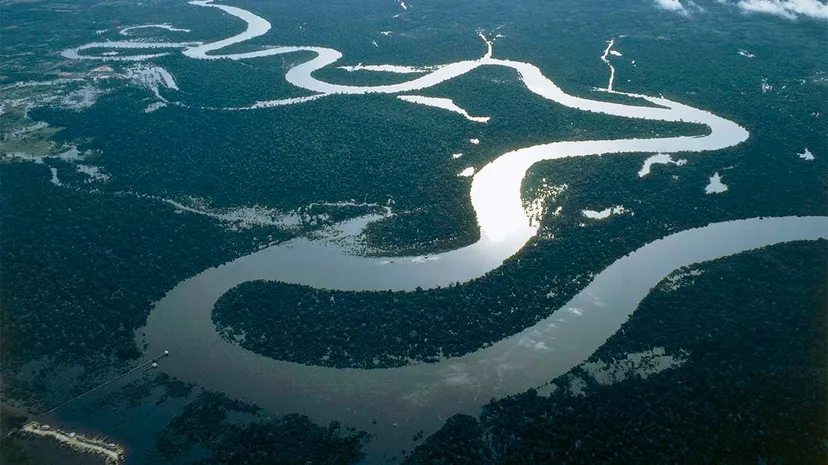
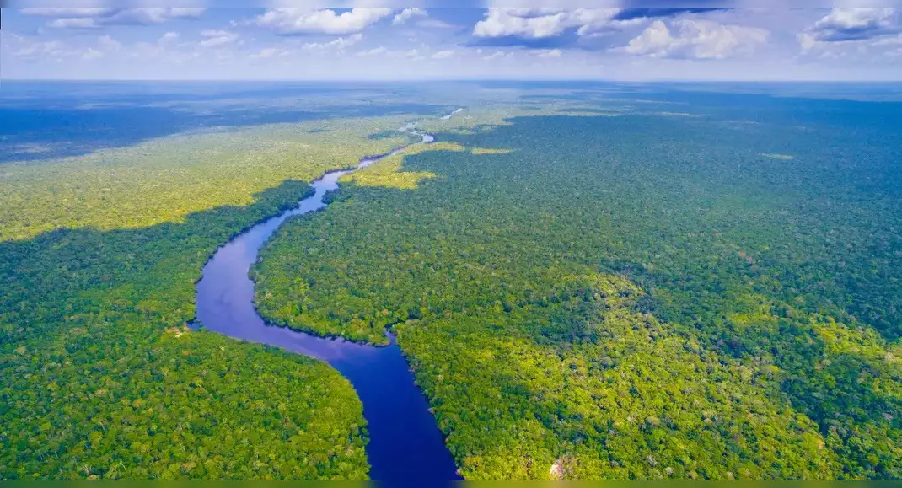

- Nile River
- Amazon River
- Yangtze River
- Mississippi-Missouri River
- Yenisei River

The Nile river is the longest river in the world, stretching 4,130 miles through East Africa, Egypt, and the Mediterranean Sea. Flows northward through northeastern Africa. Originating from the highlands of East Africa and the White Nile, it travels through eleven countries before emptying into the Mediterranean Sea. The Nile is vital for the agriculture and economy of Egypt and Sudan, providing essential water resources in an otherwise arid region. Historically, it has been central to the development of ancient Egyptian civilization, offering fertile soil and a crucial transportation route. Its annual flooding, which deposited nutrient-rich silt onto the land, supported agriculture and civilization along its banks for thousands of years more

The Amazon River, approximately 4,345 miles long, is the world's largest river by discharge volume and the second-longest. Flowing mainly through Brazil, Peru, and Colombia, it traverses the Amazon Rainforest, one of the most biodiverse areas on Earth. The river supports countless species of fish, mammals, and birds, and is crucial for local communities and global climate regulation. However, it faces significant threats from deforestation, pollution, and climate change, jeopardizing its rich biodiversity and the livelihoods of those who depend on it.more

The Yangtze River, or Chang Jiang, is Asia's longest river, stretching about 3,917 miles through China from the Tibetan Plateau to the East China Sea. It is crucial for transportation and agriculture in the fertile Yangtze River Basin and supports diverse ecosystems, including endangered species like the Yangtze giant softshell turtle. However, the river faces serious challenges, including pollution, habitat loss, and the effects of climate change, compounded by large dam projects like the Three Gorges Dam, which raise ecological and social concerns. more

The Mississippi-Missouri River System is one of the largest river systems in North America, spanning over 2,340 miles. The Mississippi River flows south from Minnesota to the Gulf of Mexico, while the Missouri River, its longest tributary, originates in Montana and joins the Mississippi near St. Louis. This system serves as a vital transportation route for goods and is crucial for agriculture, supporting fertile floodplains. It also provides diverse habitats for wildlife. However, the rivers face challenges from pollution, habitat destruction, and climate change, impacting both ecosystems and local communities. more

The Yenisei River, stretching about 5,539 kilometers (3,445 miles), flows through Siberia, originating in Mongolia and emptying into the Kara Sea. It passes through regions like Tuva and Krasnoyarsk Krai, with major tributaries such as the Angara. The river supports a diverse ecosystem, including fish species like salmon and sturgeon, and is essential for hydroelectric power, featuring several large dams. Historically significant for trade and settlement, the Yenisei remains a vital resource for local economies and cultural heritage.more